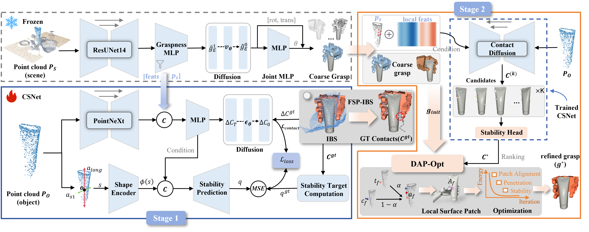

Stable dexterous grasping is essential for robotic manipulation in complex industrial environments. For multi-fingered hands, locally feasible contacts do not necessarily form stable contact configurations, particularly for objects with complex geometries or shifting internal contents under embodied single-view of robot. Existing contact-based methods mainly focus on contact generation with limited stability evaluation significantly affecting grasping stability. To address this issue, a two-stage stability-aware dexterous grasping framework, termed StaConGrasp, is proposed to evaluate and select multi-finger contact configurations before complete grasp pose generation. Specifically, in the first stage, a Contact Stability Network (CSNet) is developed to evaluate and rank candidate contact configurations based on single-view object point clouds and geometry-related stability cues. To provide fingertip-wise contact supervision, the Fingertip-wise Surface-Projected Interaction Bisector Surface (FSP-IBS) is introduced to project hand--object interaction information encoded in the IBS onto the object surface. To convert the selected contact configuration into a physically feasible complete grasp pose, Dynamic Anchor Patch-guided physical optimization (DAP-Opt) is introduced in the second stage, where discrete point-contact constraints are relaxed into dynamically updated local surface regions and the complete grasp pose is refined under penetration and stability constraints. Simulation experiments demonstrate that stability-aware contact evaluation and selection improve grasp success, with StaConGrasp achieving the highest success rate in five of six test settings and demonstrating cross-hand generalization. Real-robot experiments achieve an overall success rate of 88.0%, including successful grasps of objects with shifting internal contents.
